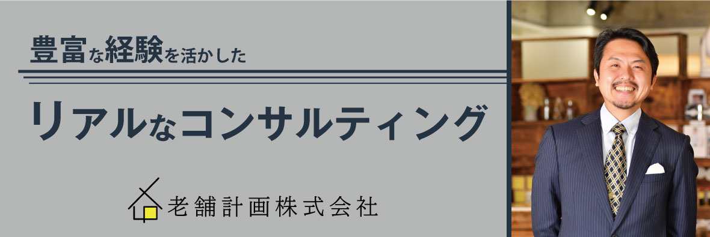
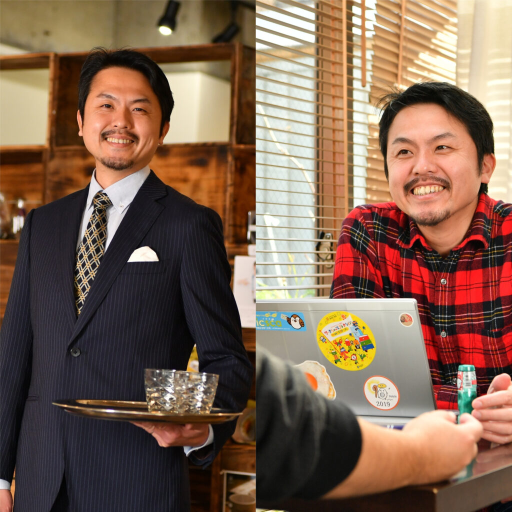

個人店・小規模飲食店専門の顧問コンサルティング
現場の叩き上げコンサルタントが、あなたの店に継続して伴走します
一人で抱え込んでいる店主ほど、顧問の効果が出ます
感覚ではなく数字で原因を切り分け、メニュー・価格・販促のどこから直すか優先順位をつけます。
原価と利益商品を見直し、「ただ上げる」ではない、納得される値上げとメニュー構成を一緒に作ります。
接客コンテスト全国ファイナリストの実務家が、現場で使える言葉と動きに落として指導します。
物件・コンセプト・厨房・メニュー・資金計画まで、自分で店をやってきた人間が順番に伴走します。
投稿の前に、店の「売り」が伝わる状態になっているかから点検します。発信は店づくりの最後の工程です。
従業員にも家族にも言いにくい数字と悩みを、利害のない第三者と定期的に整理できます。
店は、1回の助言では変わりません
月ごとに売上・原価・客数を見比べることで、「やったことが効いたのか」が判断できます。単発支援では見えない変化を追い続けます。
商品開発・接客指導・販促・利益改善・SNS指導・立ち上げまで、飲食店経営に関わる全てを一気通貫で相談できます。専門家をその都度探す必要がありません。
支援機関の専門家派遣は回数と期間が決まっています。その前後の準備や、派遣で決めたことの実行フォローを顧問で受ける使い方も可能です。
店の状態に合わせて、必要なものから順に
原価管理・コストコントロール、値上げ支援、利益商品の開発
売れる構成への組み替えと、メニューブック作成のサポート
物件選定・コンセプト設定・厨房レイアウト・開業準備
スタッフ教育・店長育成、接客品質の底上げ
接客コンテスト出場経験者の目で、料理・オペレーション・接客を調査。ベーシック33,000円（東北限定）／プロの目38,500円（全国対応）・税込、食事代・交通費別
口コミ・SNSの使い方と、店の売りの伝え方
支援事例は公式サイトの事例紹介で、支援を受けた方々のインタビューを掲載しています。
目標は「1年後に自走できる強い店舗を作る」こと。いつまでも契約を続けてもらう前提ではありません
月に一度、1時間のオンライン遠隔コンサルティング。メール相談は月5回まで無料（週一対応）です。遠方の店や、まず定期的に相談する相手がほしい店に。
月1回の訪問コンサルティング。月2回訪問は月180,000円〜。契約期間中はメール相談無制限、メニューブックやマニュアルなどの作成物は割引あり。幹部を交えた勉強会、接客セミナー・接客指導も契約に含まれます。契約期間は半年〜1年、交通費など諸経費は別途。
電話・メール・公式サイトのフォームから、店の状況と悩みをお知らせください。
現地またはオンラインで、数字と現場の状況を伺います。
支援内容・訪問ペース・料金を明示して提案します。内容に納得いただいてから契約となります。
決めた課題から順に、現場と数字の両面で伴走します。
老舗計画株式会社 代表取締役 阿部 大（あべ だい）

ホテル専門学校卒業後、仙台市内のホテルレストランにオープニングスタッフとして勤務。その後カフェ・保養施設・イタリアンレストランなどを経験。
2003年、地元・大河原町にダイニングバーを開業。日本酒バー・焼き鳥屋など店舗を広げるも、東日本大震災の影響もあり廃業を経験。失敗の側も知っているコンサルタントです。
第7回S1サーバーグランプリ全国ファイナリスト（東北代表）。客席10席の接客特化型店舗への業態変更が評価されました。
接客指導の依頼をきっかけに支援活動を始め、「良い接客は健全な経営の上に成り立つ」と飲食店コンサルタントへ。
一般社団法人日本接客アドバイザー協会も設立し、代表理事として接客の資格試験も運営。サケエキスパート・利き酒師。
はい。東北を中心に、首都圏・四国・九州など全国で支援実績があります。訪問とオンラインを組み合わせる形も可能です。
はい。開業支援も専門分野です。物件やコンセプトが固まる前ほど、直せることが多くあります。
専門家派遣は支援機関の制度の中で回数・期間が決まっています。顧問契約は店と直接の契約なので、期間・内容・ペースを店の状況に合わせて設計でき、派遣の前後のフォローにも使えます。
ヒアリングのうえ、支援内容と料金を明示した提案・見積もりを出します。納得いただいてからの契約ですので、まずは相談からお気軽にどうぞ。
相談したからといって、契約を急かすことはありません。
今の店に何が必要か、一緒に整理するところから始めましょう。
公式フォームからは24時間受付、24時間以内に返信いたします。メールは info@shinisekeikaku.com へ